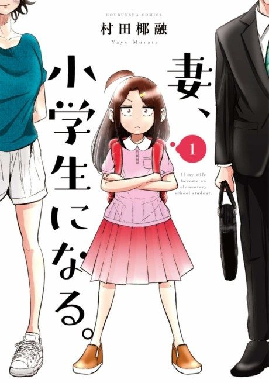

Anime
Anime
Manga2024 · Comedy, Drama, Romance
TsumaSho
妻、小学生になる。
AniList7.2
Animeter—
Episodes12 ep
MangaUnclear
Anime finished. Where does the manga pick up?
StatusNo source yet
We looked for where the anime ends in the manga but found no source we trust yet. The manga is 111 chapters, finished.